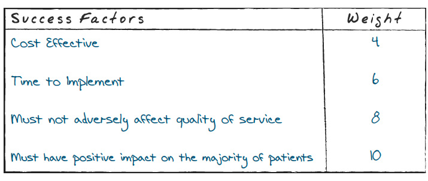

|
three long-term, affordable solutions that can be implemented in
the next couple of months – advertising, massage and acupuncture
and scheduling software. George shook his head. “But there are
still three of them. How do I make my decision from here?”
“Think about the impact of each option on the patient community
and your ability to remain competitive. Take the new scheduling
software, for example. This will certainly improve your office
productivity, but will it have immediate impact on patient loyalty?
I don’t think so. As for acupuncture and massage, it will probably
only benefit a select few. No winner there. Advertising in new
ways may be just what you need to reach the entire community
and differentiate yourself from the medical center.”
George wondered, “Isn’t there a more scientific way to arrive at
|
this result, or do we just do it in our heads?”
Wendy laughed. “Prioritizing is another step in the decision
analysis process. Let’s take your Go/No Go items and assign them
weights based on their impact on your business.”
“By ‘impact,’ do you mean attracting new patients and keeping
the existing ones?” George asked.
“Not only that. You also need to ensure that whatever you invest
in your solution will be returned to you and then some. First, you’ll
make a list of all the critical qualities, or success factors, that drive
your decision. Next, you’ll assign a weight to each success factor.
George looked a bit frustrated. “So, Wendy, what exactly do
you mean by weight? Is this really necessary? Isn’t Go/No Go
enough?”
|
Cost Effective
Time to Implement
Must not adversely affect quality of service
Must have positive impact on the majority of patients
4
6
8
10
Page 15
Figure 5.
Success Factors Weights
Make a list of the critical qualities, or success factors, that
drive your decision.
Figure 6.
Success Factors Weights and Ratings
Give each option a rating from 1 to 10, with 10 being the highest.
Cost Effective
Time to Implement
Must not adversely affect quality
of service
Must have positive impact
on the majority of patients
4
3
4
7
4
10
6
6
6
9
6
3
8
7
8
10
8
9
10
4
10
10
10
2